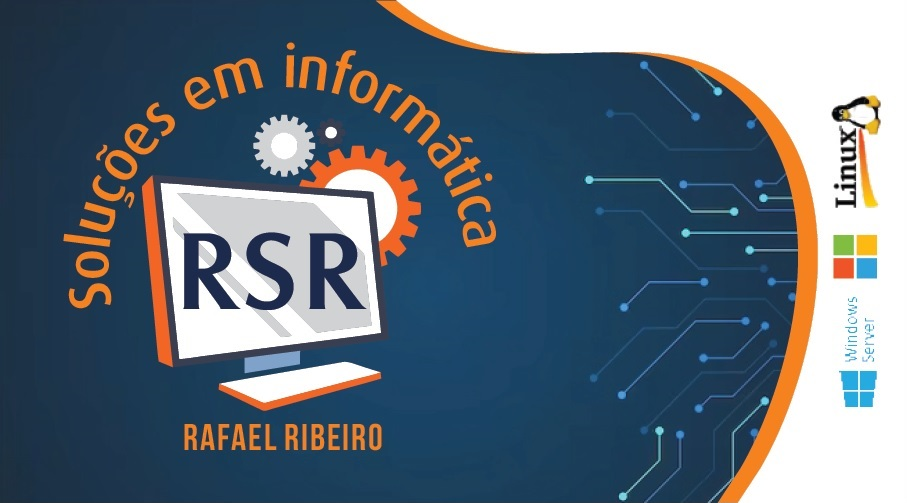
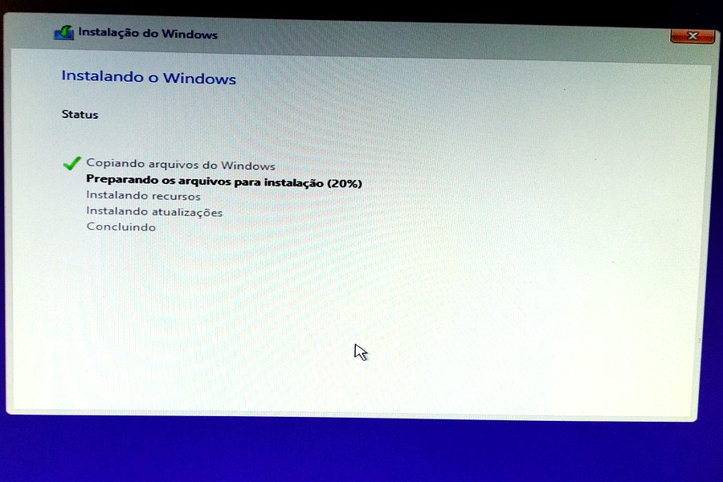
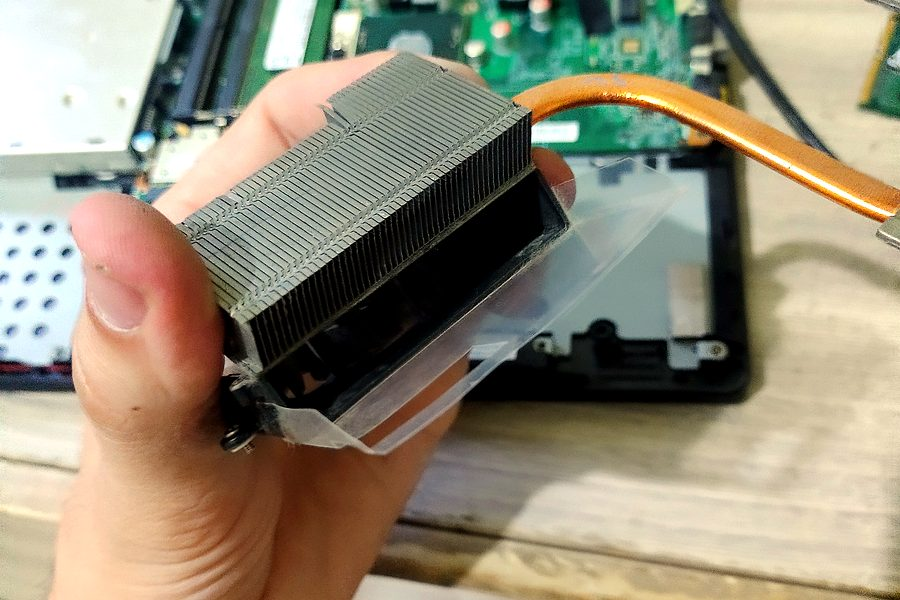
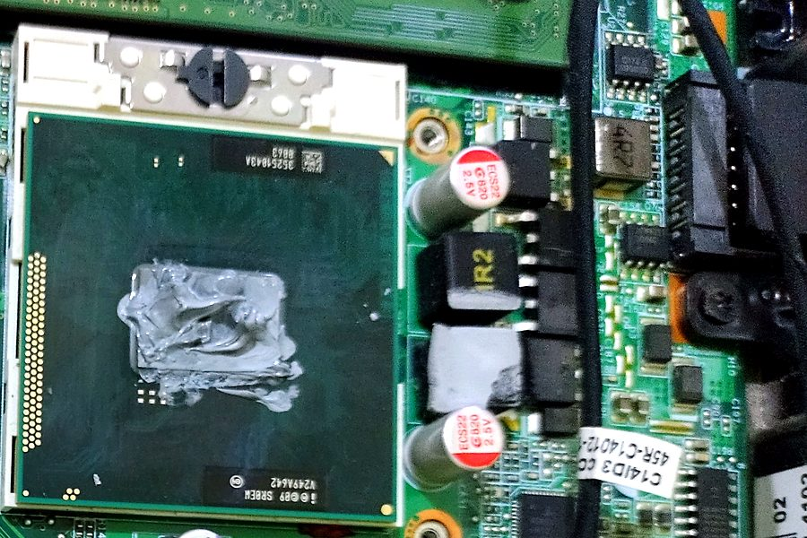
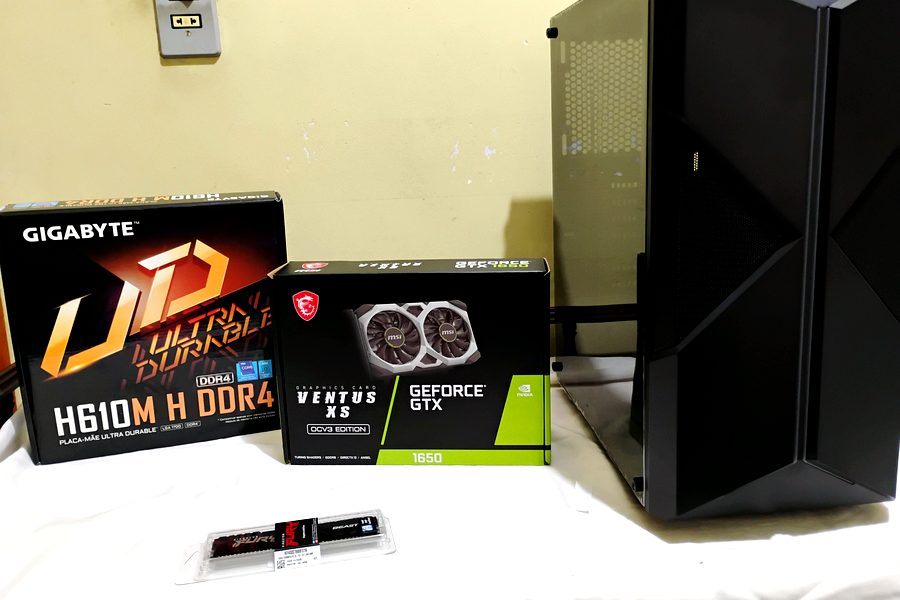
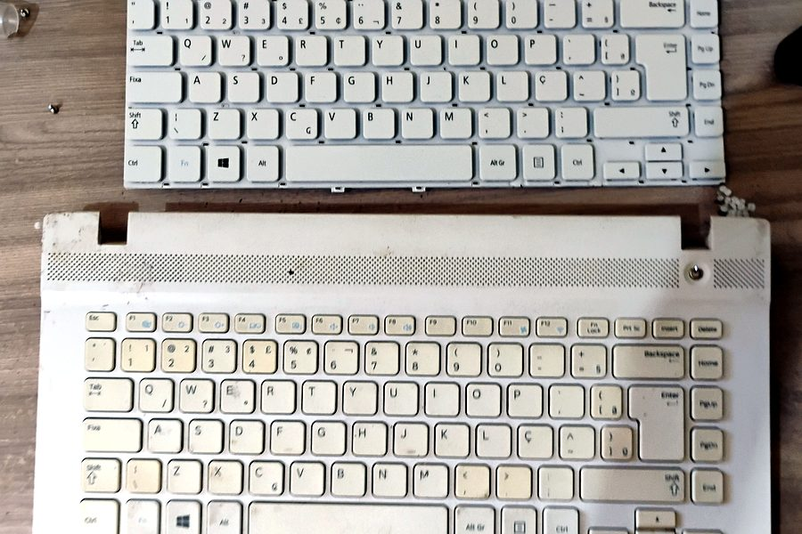
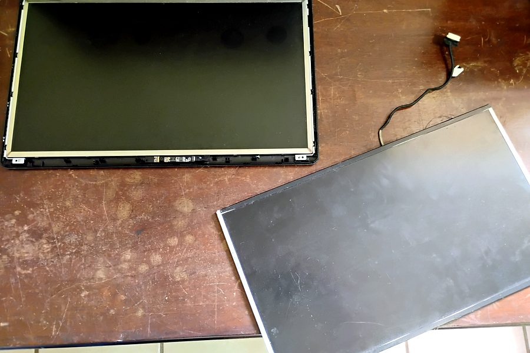

Assistência técnica para notebooks e computadores. Trabalhamos com Windows, Linux e Windows Server.

A RSR Soluções em Informática é conduzida por Rafael Ribeiro. Você conta o problema, recebe uma explicação clara e o valor antes do serviço.
Cuidamos de formatação, limpeza, peças e recuperação de dados, para você voltar a usar o equipamento sem dor de cabeça.
Alguns trabalhos realizados.






Escolha o serviço e peça seu orçamento pelo WhatsApp.
Instalação do sistema, drivers e programas para deixar a máquina rápida.
Limpeza interna do notebook para evitar superaquecimento.
Tentativa de recuperar arquivos de HDs com defeito.
Substituição da placa-mãe de notebooks e computadores.
Teclado novo para notebook com teclas falhando.
Substituição de telas quebradas ou manchadas de notebook.
Instalação e configuração de Windows Server, Proxmox, XenServer e VMware.
Montagem de computador desktop e de PC gamer, com peças escolhidas para o seu uso.
Escolha o serviço e conte o problema. A resposta chega pelo WhatsApp.